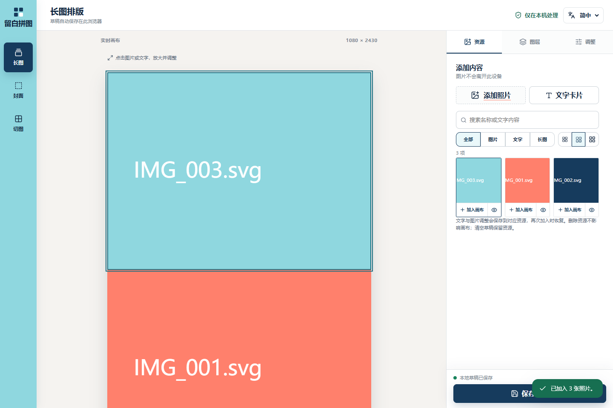
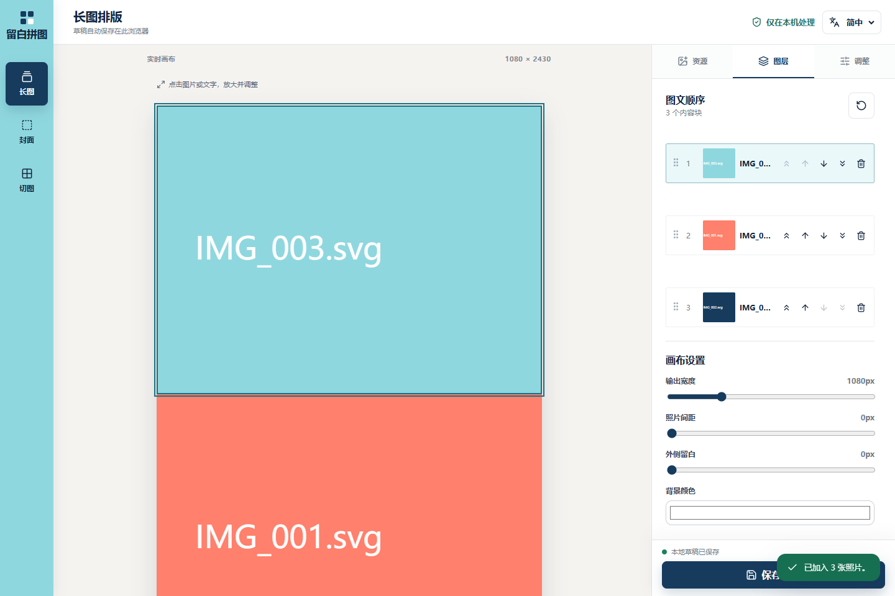
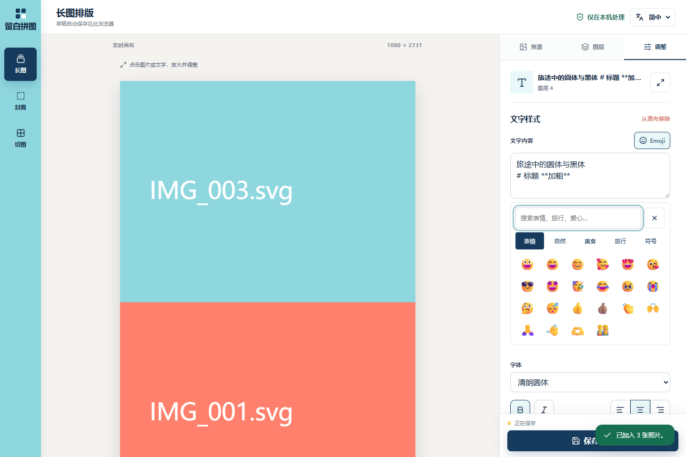
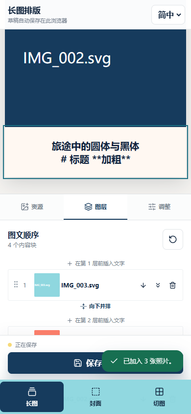

研究日期：2026-10-25。仓库：D:\MyProgram\pyq，分支 dev，提交 bf4a3192767325ccaf996106c0428fffd3befdbf；研究开始时工作区干净。本轮只产出研究文档与证据，不实现新功能、不修改应用逻辑、不发布版本。
1. 核心判断
下一轮改进的主线应当是：以排版任务组织资源，以结构化文档承载文字，以统一渲染保证预览与导出一致。 清空、时间排序、混合文字样式、Emoji 风格和图层交互都应接到这条主线上。
目前的基础可以继续沿用：本地处理、资源与画布图层分离、独立长图快照、HTML/SVG 交互预览与 Canvas 共享布局、强类型三语文案。没有必要为这些需求引入账户、云端数据库或重写整个应用。
建议顺序是：先修数据安全和手机操作缺口；再做资源批量管理、时间信息与任务隔离；随后统一文字/字体/Emoji 的渲染模型；最后加入模板、批处理与更完整的离线能力。浮动 Emoji 面板可提前独立交付，多风格 Emoji 则应等待渲染模型完成。
2. 研究方法与证据边界
本报告由当前会话直接完成源码、界面和技术资料核查，不是自动设计评分或双评审结果。采用 frontend-design-debugging 的需求/实现/证据分离方式，并沿用 Impeccable 的现有设计上下文；不使用未取得的检测器结果作为证据。
| 检查项 | 本轮结果 | 能说明什么 |
|---|---|---|
| 当前源码与 Git 历史 | 核查类型、资源、草稿、排版、导出、确认框、字体、Emoji、偏好和部署工作流 | 本报告对应当前提交，而非旧对话中的版本 |
| 单元测试 | npm test：9 个测试文件、64 项通过 |
已有纯函数与偏好逻辑基线通过；不能据此认定 UI 没有问题 |
| 生产构建 | npm run build 通过 |
当前 TypeScript 与打包链路可用 |
| 生产预览 | Edge，1440×960 与 390×844；新建独立浏览器上下文 | 核查当前页面；不读取或修改用户现有草稿 |
| 导入顺序与时间 | 按 003、001、002 导入，资源仍按该顺序显示 | 无拍摄时间/名称排序；原始非 HEIF File 的修改时间仍可能存在于 Blob 对象中 |
| 字体 | 两个字体选项对同一中文样本的 Canvas 像素完全相同，测量宽度均为 288px | 当前 Windows 环境确实发生相同字体回退；不是对所有设备的推断 |
| 手机图层 | “移到最前”和“上移”尺寸为 0；其余按钮为 28×30px | CSS 隐藏了上移路径；可见按钮也偏小 |
| 交错撤销 | 删除图片资源后新增文字，再撤销删除，新增文字资源被旧数组覆盖 | 现有单步撤销存在真实的数据覆盖问题 |
| 混合坏文件 | 同批导入一张有效 SVG 和一个损坏 PNG，最终新增资源为 0 | 一个坏文件会使整批有效结果无法提交 |
| 外部方案 | 仅参考官方文档、项目仓库与许可证 | 选型是建议，尚未接入或完成兼容性验收 |
本轮未连接远程 Rocky Linux 服务器，未测试真实 iPhone、微信缩略图或系统输入法；没有运行 200 张手机实拍图的性能基准。下文中性能目标均为拟定验收指标，不是已测成绩。
当前主 JS 为 374.94 kB（gzip 114.96 kB），CSS 为 49.94 kB（gzip 9.99 kB）；HEIF 解码异步包为 3,188.91 kB（gzip 792.24 kB）。HEIF 包较大，但按需加载已经存在，不应误报为每次打开页面都加载。
3. 当前能力与旧清单的差异
仓库中已有 IMPROVEMENTS.md，日期为 2026-10-09。它保留为历史材料，不能直接作为当前待办列表。
设计记录也存在陈旧之处：DESIGN.md 仍写“只在底部插入”，当前代码已经恢复层间插入；其 Emoji 内联规则则与用户本次浮动面板的新需求不同。前者是文档待同步，后者是待设计的新方案。本轮记录差异，保留旧决策历史。
| 能力 | 当前状态 | 本轮应关注的剩余问题 |
|---|---|---|
| 资源搜索、图片/文字/长图筛选、2/3/4 列 | 已有 | 缺批量选择、清理、显式排序、时间分组、任务归属 |
| 重命名 | 图片与长图已有入口 | 文字资源仍以正文当名称；文字重命名回调未处理 text 分支 |
| 删除确认与撤销 | 已有 | 撤销是旧数组恢复，会覆盖之后的新变更；没有统一历史记录 |
| 最近文字样式 | 已有 localStorage 偏好 | 仍不能在同一框内设置不同字体、字号和局部强调 |
| 图层间插入文字、移到最前/最后、双图交换 | 已有 | 手机上移被隐藏、拖拽依赖原生 draggable、按钮拥挤 |
| 图片裁切、图片文字草稿提交 | 已有 | 裁切即时写入，文字按“完成”提交，两者退出语义不同 |
| 已保存长图更新/另存 | 已有 | 更新来源只在组件内存中；刷新后丢失；更新还会覆盖 createdAt |
| 超过 40 张导入 | 当前没有旧的截断代码 | 应补进度、取消、坏文件容错与大图预算，而非再次修“40 张上限” |
| Emoji 分类、搜索、最近使用、光标插入 | 已有 | 内联面板占属性栏；只有原生字形；没有可复现的风格包 |
| 简中、繁中、英语与减少动画偏好 | 已有 | 新界面继续覆盖三语和 reduced-motion，不重做现有机制 |
4. 优先级与工作量总览
P0：优先阻止已证实的数据覆盖；P1：核心任务路径；P2：效率或表现增强；P3：在前面稳定后再扩展。工作量为相对规模：S 局部，M 跨组件，L 涉及模型/渲染，XL 涉及多链路；不是工期承诺。
| 编号 | 建议 | 优先级 | 规模 | 主要前置 |
|---|---|---|---|---|
| F01 | 修复撤销覆盖，建立按操作记录的历史边界 | P0 | M | 无 |
| R01 | 批量选择、清空导入资源、按筛选清理 | P1 | M | F01、清楚的删除范围 |
| R02 | 多种时间字段、排序与日期分组 | P1 | M/L | 元数据提取与兼容迁移 |
| R03 | 排版任务切换与资源归属 | P1 | L | 任务/资源/快照的生命周期定义 |
| R04 | 同框混合格式、Markdown 快捷输入 | P1 | XL | 字体注册与新文字布局 |
| R05 | 真正不同的圆体/黑体、字体就绪机制 | P1 | M | 字体文件、覆盖率和加载策略 |
| R06 | 图层按钮关系、手机排序、状态过渡 | P1 | M | 选中对象与动作模型 |
| R07 | 浮动 Emoji 选择器 | P1 | M | 统一浮层和编辑选区管理 |
| R08 | 多风格 Emoji，含 iOS 使用路径 | P2 | L | 文字/Emoji 共享布局、素材注册 |
| F02 | 批量导入局部成功、进度、取消 | P1 | M | 导入队列 |
| F03 | 保存来源持久化、createdAt/updatedAt 分离 | P1 | M | 草稿版本字段 |
| F04 | 命名与正文分离、资源点击行为澄清 | P1/P2 | M | 资源元数据模型 |
| F05 | 增量存储、备份恢复、多标签页协调 | P1/P2 | L | 记录版本与 Blob 引用边界 |
| F06 | 缩略图、可见区渲染、图片解码预算 | P2 | M/L | 真实设备基准 |
| F07 | 将浏览器回归纳入仓库和 CI | P1 | M | 稳定 fixture 与标准测试入口 |
| F08 | 多图行、复制图层/样式、排版模板 | P2 | L | 历史记录与通用行结构 |
| F09 | 切图复用资源、ZIP 下载、输出预设 | P2 | M | 资源选择与导出任务模型 |
| F10 | PWA、可选贴纸和扩展素材包 | P3 | L | 缓存、版本和素材授权策略 |
5. 资源：快速清空与跨任务管理
R01：批量操作应当同时交代范围和后果
资源工具栏增加“管理/多选”；进入后显示已选数量、全选当前筛选结果、取消选择、批量导出和删除。日常操作不常驻大量小垃圾桶。
提供三个明确入口：删除所选资源、清空本任务导入资源、清空当前草稿。已保存长图/封面另行管理；默认清空导入资源不得删除保存版本或当前画布。日后若提供“删除整个任务”，才明确列出将删除的草稿、素材和成品数量。
搜索或日期筛选开启时，“全选”显示为“选择全部 23 个筛选结果”，不能让人猜测是可见屏幕还是整个资源库。操作前展示范围和数量；批量事务完成后再显示成功。保存失败须恢复 UI 或保留待重试状态。
删除应先经过 F01 的操作式恢复，后续可加回收站；回收站采用过期清理和存储预算，不应无限保存原图。取消清理与恢复操作都不能让旧自动保存任务把已删资源重新写回。
拟定验收：导入 100 项后最多三步清空本任务素材；已有画布和保存成品不变；清空后再新增一项，撤销清空只恢复被清理项，不覆盖新项；刷新后范围和结果一致。
R03：用“任务”解决反复清库的根因
建议增加轻量的排版任务：例如“国庆出游”“周末相册”。每个任务拥有自己的草稿、导入批次和保存结果；开始第二个任务时旧任务可以归档，不必为了获得干净的资源栏而删除前一个任务。
第一步可先做批次/任务标签和清理，不等待完整任务首页。随后加入新建、切换、重命名、归档和任务内搜索。旧数据归入“原工作区”；资源可显式复用到另一任务，保存结果继续是独立版本。
建议区分：任务是工作边界，导入批次是组织线索，标签是可选检索属性。第一版不同时推出复杂文件夹、无限层级标签和多个相似的分组系统。
6. 资源：时间信息、排序与日期标签
R02：先区分时间的含义
| 字段 | 含义 | 不能替代的概念 |
|---|---|---|
| importedAt | 真正进入本库的时间 | 不是照片拍摄时间 |
| capturedAt / capturedLocalTime | 原文件 EXIF 拍摄时间与偏移信息 | 缺时区时不能强行视为 UTC |
| fileModifiedAt | 文件系统最后修改时间 | 转存、聊天下载或编辑后可能变化，不等于拍摄时间 |
| createdAt | 文字资源、任务或保存版本的创建时间 | 更新时不应重写 |
| updatedAt | 内容最后更新时间 | 与创建、拍摄分开 |
| importOrder / batchId | 同批选择顺序与批次 | 在缺日期、同秒拍摄时仍可稳定排序 |
文件修改时间的语义见 MDN File.lastModified。EXIF 可采用 exifr 的选择性解析能力，在 HEIF 转 PNG 之前从原 File 提取必要日期；不为了排序顺便读取或持久化 GPS。新格式支持、时间偏移与坏元数据仍须使用真实样本验收。
本轮实测发现，未转换图片的 Blob 实际仍可能是 File，并保留 lastModified。旧库可尝试恢复该字段，但不能据此恢复真实导入时间。旧 HEIF 的转换 PNG 或已经丢失的拍摄信息不能凭空补回；没有可靠来源时标为“时间未知/历史资源”。旧 ID 中的时间只可作为有来源标记的推测，不装成精确日期。
排序和分组建议
提供导入时间新/旧、拍摄时间早/晚、名称自然顺序、最后修改时间；默认资源视图按最近导入组织，拍摄时间排序作为明确选项。名称使用数字感知排序，避免 IMG_10 排在 IMG_2 前；同时间项按导入顺序和稳定 ID 打破平局。
日期分组默认以“导入时间”为依据，并在工具栏显示依据。互斥分段为：今天、昨天、近 7 天（不含前两组）、近 30 天（不含近 7 天）、更早、时间未知。使用用户本地日历日期而非简单除以 24 小时；跨午夜与夏令时应有测试。若切换为拍摄时间，标题明确写“按拍摄日期”，未知项仍独立保留。
资源排序只改变资源列表，不能自动打乱已完成的画布。 增加单独的“按此顺序加入画布”操作；若要调整已有图层，应展示影响范围并可撤销。资源缩略图下应有可读名称和一项时间/批次信息，否则排序后仍难以辨认文件。
拟定验收：混合 JPEG、HEIC、截图和文字；有日期、缺日期、时区缺失、同秒连拍均稳定；排序和日期依据刷新后保留；已有草稿顺序不变；午夜后日期组正确刷新。
7. 文字：Markdown 与混合字体字号
R04：需要的是结构化富文本，而不仅是解析几种符号
当前 TextAppearance 只有一个 text、fontFamily、fontSize 等整块属性。TextControls 是 textarea；stitchLayout.ts 也按一套样式测量整段。只换成 Markdown 文本框，并不能完成同框混合字号和字体，导出同样不会自动获得这些能力。
建议第一版支持：标题/正文、局部粗体/斜体/下划线、文字颜色、局部字号和字体、无序列表、有序列表、引用、段落对齐、清除格式、Emoji。可输入 # 标题、**重点**、- 列表 等快捷语法，选中文字时出现小工具栏。表格、代码高亮、复杂嵌套和任意 HTML 不作为首版目标。
Markdown 不作为唯一存储格式。 标准 Markdown 不能完整表达任意字体、字号、颜色和 Emoji 风格。结构化 JSON 是可编辑事实源；Markdown 是输入、粘贴和便携输出方式。导出 Markdown 无法保留的格式应提示，项目备份才负责无损恢复。
编辑器可优先验证 Tiptap 开源核心，使用有限的节点/标记集合；官方提供 JSON 输出及字体、字号扩展。其 Markdown 扩展当前仍标记 Beta，须隔离适配层，不把所有持久化数据绑定到该扩展的字符串往返。选型还需做中文输入、移动选区和包体积原型；不需要为本地排版启用其云端服务。
三条链路必须一起修改
- 编辑器维护选区、输入法和局部格式；输出有版本的文档 JSON。
- 共享排版将段落与内联文字/Emoji 变为带字体、基线、行高和坐标的 runs；同一行可以包含多套样式。
- HTML/SVG 预览与 Canvas 导出消费同一份排版结果；最长行、旋转文字、列表缩进和大字号字符均按实际尺寸计算。
现有的字素换行必须保留，家庭 Emoji、肤色、旗帜不可拆开；文字测量还要考虑连续字体 run 的字距、中文标点和不同字号的基线，不能简单把各字符宽度相加。图片文字的边框、背景与旋转仍属于整个容器。
旧纯文本转换为一个普通段落，旧字体/字号作为默认样式；不自动把旧内容中的 # 和 ** 当作 Markdown，避免改变既有作品。粘贴富文本经过白名单；不执行粘贴来的脚本或任意 HTML。
拟定验收：同一框内标题 48px、正文 28px、局部不同字体与 Emoji；编辑、重开、导出后换行和颜色一致；撤销局部格式、中文输入法、换段和粘贴均可用；旧库结果不被重新解释。
8. 字体：让圆体真正成为圆体
R05：目前是系统字体候选列表，不是字体资源
圆体与黑体的不同主要在第一候选 ui-rounded 与 Avenir Next；中文都可能回退到同一个 PingFang SC 或 Microsoft YaHei UI。仓库没有配套的自托管圆体字体文件或 @font-face，本轮 Windows 像素比较已证实问题。
建议以稳定的 fontId 注册真实字体：常规黑体、圆体、宋体、手写体。首版先保证黑体和圆体确实不同，保留现有系统字体作为回退。圆体候选可评估 寒蝉圆黑体及其 OFL 许可证，最终选择需核对简繁中文覆盖、字重和实际预览，不因名称含“圆”就直接采用。
字体文件同源部署，优先 WOFF2、分包或合理子集；按所选字体/实际文字加载，避免每次打开就下载全部中文字体。不能只裁出固定一组常用字却对生僻字静默混用另一字体。字体列表展示实际字形示例、加载状态和失败后的回退状态。
导出前显式加载所用字体及所需字形，再完成测量；等待加载与重新布局，避免先用备用字体测量再换字体绘制。参见 CSS Font Loading API。现有作品记录 fontId 和资源版本，防止以后更新字体使旧成品重新排版。
9. 图层、按钮关系与动画
R06：先降低操作噪音，再加入能解释变化的过渡
桌面每行同时有五个 28×30px 操作按钮，另有排序手柄、编号、缩略图、层间插入与向下并排。狭窄属性栏中的名称被压缩，多个 IMG_… 几乎无法区分。插入与并排按钮即便透明仍占布局高度，造成行与行之间松散、动作与对象关系不清。
手机 CSS 直接隐藏前两个按钮，恰好是“移到最前”和“上移”。该问题已实测，建议第一批修正；不能依赖手机也有 Ctrl+方向键。原生 draggable 也不是已经验证的完整触屏排序方案。
建议把每行组织为“手柄 + 缩略图 + 两行信息 + 更多”；选中是行的主要动作，双击/明确按钮进入调整。上移、下移和更多在选中状态/焦点状态可达；更多收纳置顶、置底、复制和删除。触屏至少保留明确的上/下移动替代入口。双图行展开为两个子图条目，行容器与单图层级清楚。
采用 pointer/触控/键盘统一排序方案，可评估 dnd-kit；要求拖拽占位、越界滚动、取消、焦点恢复和读屏播报。它是待原型验证的候选，不在本报告中承诺某个库可以直接解决全部问题。修复 role=button 容器内又嵌多个 button 的语义结构。
按钮按语义归组：底部主动作仅为保存/更新；复制、置顶等属于对象菜单；删除为危险动作；清空任务在任务管理。长图和封面的保存、另存、更新、导出应使用一致的状态及文案。Toast 应避开保存按钮和手机底部导航，本轮截图可见覆盖。
建议的动效契约（尚未实现）
| 变化 | 过渡建议 | 用途与边界 |
|---|---|---|
| 按钮悬停/按下 | 100–150ms 的背景、边框变化 | 不让按钮跳动或改变布局 |
| 选中图层 | 120–180ms 的边框/背景过渡 | 让对象与调整栏目对应起来 |
| 图层排序、插入、删除 | 160–220ms 位置与占位过渡 | 解释内容移动；稳定 key 与真实布局不变 |
| Emoji/更多菜单 | 120–180ms 显隐及轻微位移 | 不阻塞点击，不抢编辑器选区 |
| 保存成功 | 清晰状态变化 | 不加入干扰排版的庆祝效果 |
| 减少动画偏好 | 立即切换，保留文字状态提示 | 沿用已有 prefers-reduced-motion |
拟定验收：390px 下每层都能向上/下移动；动作触达面积达到 44px；键盘可选中和排序；50 层列表仍可识别名称；快速连续点击不因动画导致误排序。
10. Emoji：浮动面板与多风格
R07：把位置管理与输入选区管理分开
桌面用锚定 Emoji 按钮或文字选区的浮动面板，不撑长右栏；空间不足时自动翻转/避让，内部滚动。手机使用适应可视视口和软键盘的浮层或底部面板。默认无需拖动；“可固定/拖动的小窗”可作为之后的增强，避免首版多一套窗口管理。
可使用 Floating UI 的 Portal 与定位能力。重点不只是 position: fixed：图片文字本身已经在模态框内，浮层必须有明确的归属容器、层级和焦点范围。否则挂到 body 后可能被模态焦点陷阱排除，或压在确认框错误的一层。
统一要求：记录编辑器选区；打开搜索不会改变插入点；插入后回到原选区；Escape 先关 Emoji，再关上层编辑器；点外关闭回到触发源；滚动、窗口缩放、软键盘变化后仍能定位。丰富文本以后改为文档选区书签，不能继续只存 textarea 的两个数字。
R08：区分“在 iPhone 原生显示”与“所有设备固定 iOS 外观”
当前选择器只插入 Unicode，Emoji 外观由系统字体决定。在拥有 Apple 原生字形的设备上可继续使用原生模式；这不会让 Windows 自动变成同样外观。若要求跨设备固定 iOS 外观，需要另行确认有明确分发权的素材来源，不能把网上的 Apple 字体或第三方打包等同于已取得授权。
建议首版风格：原生、Twemoji 扁平、Fluent 立体/彩色可用素材；iOS 固定素材包作为有来源和授权后才启用的扩展。官方 Twemoji 区分 MIT 代码与 CC BY 4.0 图形；Fluent Emoji 仓库列有 MIT 许可。正式接入须保留版本、来源和相应说明，并核对实际分发文件及缺失字形。
实现时保留 unicode 语义及 styleId/assetVersion；表情图像进入共享 inline run，有明确宽度、基线和行高。只给选择器换皮无效，HTML/SVG 预览、Canvas、缩略图、PNG/JPG 都要使用同一素材。素材同源、按需加载，导出前等待解码，避免跨域污染画布。
风格随文档/快照保存，不能因为全局偏好改变而把旧成品全部换风格。风格包缺字时明确回退；离线素材未缓存时也要给出状态。旧原生 Emoji 文本保持原样，不偷偷升级。默认先按整个文档选风格，局部表情逐个不同风格可以后置。
拟定验收：同一家庭/肤色/旗帜序列在选择器、预览和导出中一致；保存刷新后风格不变；切换设备时内置素材风格不变；缺失素材与加载失败可恢复；浮层在手机键盘、图片文字弹窗和确认框中均可用。
11. 额外发现与实用功能
| 编号 | 事实/问题 | 方案与验收重点 |
|---|---|---|
| F01 | 删除资源的撤销用 setAssets(snapshot)，会抹掉之后新增的资源；层删除也有整数组恢复写法 |
记录被删 ID、内容、原位置与操作版本；撤销仅逆转该操作。再逐步加入按任务的撤销/重做，拖动连续事件合并为一步，文字输入法按编辑器事务管理 |
| F02 | 一个有效文件加一个坏 PNG 导入，新增为 0 | 逐文件隔离错误，保留有效结果，最终列出失败文件与原因；进度、取消、重试，不将顺序解码直接改为无上限并发 |
| F03 | 更新原长图已有，但来源 ID 不在 StitchDraft 中；更新时还写 createdAt: Date.now() |
持久化编辑来源，分离创建/修改时间；刷新或工具切换后仍知道更新哪份作品；删除源版本后明确改为另存 |
| F04 | 资源缩略图点击会寻找画布副本；不在画布时只提示；文字名称等同正文且重命名分支未处理 | 建议缩略图统一打开资源详情，“加入画布”明确新增副本；增加 displayName 与 originalName/正文分离；重命名文字模板不得改正文 |
| F05 | 资源作为一个数组写入；草稿和保存版本带完整内容，缺存储预算与多页协调 | 资源逐条增量写入；重型 Blob 与编辑参数分离。逻辑上维持快照独立，底层可复用不可变 Blob 并按引用回收。无法从代码断定浏览器物理存储一定重复多少，需量测 |
| F06 | 全量渲染资源、原图 Blob 用于缩略图；超长图仍需整图导出 | 导入生成小缩略图；按可见区渲染，限制解码并发；在 50/200 张真实照片下记录启动、滚动和导出耗时，再决定 worker/分块方案 |
| F07 | CI 已跑单测、构建及 Python 部署测试；浏览器脚本在被忽略的 test-results 中且有机器路径 | 将关键流程迁至可复现的 Playwright 测试与 fixture，固定入口进入 CI；重点测交错撤销、任务切换、日期、混合文字导出、浮层焦点，不以测试数量代替行为覆盖 |
| F08 | 双图行固定两张；已可交换，但没有多选组合、复制图层和样式工具 | 先加复制图层、复制/粘贴样式和多选；再将行升级为有限 N 张及宽度比例，提供旅行标题、照片+说明、日期分隔等模板；保持完整图层边界供封面使用 |
| F09 | 切图工具使用自己的临时 source，离开工具后丢失；多文件逐个下载 | 从资源/保存长图选择切图源；保留取景；支持单文件 ZIP 和尺寸/格式预设。输出图片保持本地生成，单张下载仍保留 |
| F10 | 本地处理不等于刷新后完整离线可用 | 后续加 PWA/显式离线包，分别缓存应用、所用字体和 Emoji 素材；显示版本与离线资源缺失状态 |
还值得加入的轻量能力：任务封面/最近打开、收藏资源、标记“当前草稿已使用”、原图与裁切结果对比、文字/背景/边距预设、批量文件命名、导出队列与预计尺寸、长图分段导出、可编辑项目包备份。日期/地点说明卡应由用户选择生成，地点不默认为从 GPS 自动读入。
不建议在这一轮同时做自由变形画布、云端账户/多人协作、AI 修图或社交平台直发；它们会改变当前产品和部署边界，却不能优先解决上述任务摩擦。
12. 共同架构与依赖关系
推荐的数据边界：
Task / Project
├─ Draft：blocks、settings、sourceCompositionId、revision
├─ AssetRecord：名称、时间来源、batchId、taskId、编辑模板
├─ SavedComposition：独立版本、createdAt、updatedAt、schemaVersion
└─ History / Trash：可逆操作与保留策略
BlobRepository：不可变图片/缩略图；按草稿、资源、快照、回收站引用保留
RichTextDocument：段落 + text/emoji runs + marks + 版本
FontRegistry / EmojiRegistry：稳定 ID、版本、来源、加载状态
SharedLayout：文档 + 字体/素材 → 测量与几何 → HTML/SVG / Canvas
OverlayManager：所属编辑器、选区书签、焦点、Escape、层级
资源与图层不要因为新增任务而重新耦合。清空资源保留图层、删除原素材保留保存结果仍是已实现行为；底层 Blob 去重时同样需要保留这些语义。
关键依赖顺序：
操作式恢复 ─→ 安全批量清理 ─→ 任务管理 / 回收站
时间元数据 ─→ 稳定排序 ─→ 日期分组 / 按拍摄顺序加入画布
字体注册 ─→ run 测量与换行 ─→ 富文本编辑 / 多风格 Emoji / 模板
浮层与选区 ─→ 浮动 Emoji ─→ 富文本选区工具栏
记录版本与备份 ─→ 增量存储 / 多标签协调 / 数据迁移
浏览器回归 ─→ 为以上每个阶段提供可上线的验收边界
数据迁移必须作为正式功能的一部分
现有 IndexedDB 为 v2，草稿、资源与快照都没有完整的内容 schema 版本。应给文档/记录添加 schemaVersion；只有新增 store、索引等结构变化才需要提高 IndexedDB 数据库版本，新增一个可选字段并不必然要求 DB 升级。
迁移前可导出备份，迁移失败不覆盖原库。旧工作区映射到默认任务；旧时间未知保持未知；旧纯文本不解析为 Markdown；旧保存快照可继续导出。加入 versionchange/onblocked 处理，说明其他标签页占用，而不是永久卡在加载中。
静态网站回滚不等于 IndexedDB 回滚。 后续发布应考虑旧版本遇到新记录格式时的只读提示或兼容读取；不要让部署回退后错误覆盖新数据。报告未修改既有服务器、Nginx 或自动部署方案。
13. 分阶段交付建议
| 阶段 | 主要交付 | 退出条件 |
|---|---|---|
| A：完成任务更安全 | 修复交错撤销、手机上移、坏文件整批失败；批量选择/清空；保存来源与时间语义修正；关键浏览器回归 | 连做两个任务时可明确清理素材，已有作品不变；撤销不覆盖之后变更 |
| B：资源可整理 | 拍摄/导入元数据、排序、日期组、批次/任务切换、增量记录和项目备份；浮动 Emoji 可并行推进 | 混合日期资源可稳定定位，任务之间不串素材；刷新与备份恢复保持归属 |
| C：文字和表现统一 | 真字体、字体加载门禁、结构化富文本和共享 runs；Markdown 快捷输入；原生与内置 Emoji 风格 | 同框混合样式在预览、资源、封面和 PNG/JPG 中一致，旧项目仍可读 |
| D：批处理和模板 | 多图行、复制样式、模板、ZIP/导出队列；大图库优化；再评估 PWA | 常用重复排版明显省操作；大图性能和离线状态有实测数据 |
建议下一次实际开发先覆盖阶段 A，并在阶段 B 之前锁定“任务/资源/保存版本”的定义。若只想先拿到轻量收益，可以先交付批量清理、名称/导入顺序排序、浮动 Emoji 和真实圆体；其中拍摄时间排序和多风格 Emoji 仍需完整的数据与渲染支持，不能把按钮当成功能完成。
14. 验收与研究证据
关键验收样本：旧 v2 库、空库、两个任务、同一资源的独立图层副本、删除后新建再撤销、JPEG/HEIC/截图混合日期、缺 EXIF、跨午夜和时区、200 张实拍照片、中文 IME、混合字号文字、ZWJ/肤色 Emoji、字体/素材加载失败、模态框中的 Emoji、存储配额不足、两个标签页并行编辑。
本轮没有为这些未来能力记为“已实现”。已完成的是研究、64 项既有单测、生产构建、当前页面观察与两项边界复现。证据 JSON 和截图收录在 design/src/research-2026-10-25/；截图中的图片为本地生成的示例 SVG，字体比较为本机结果。
主要代码对应：
| 主题 | 当前源码位置 |
|---|---|
| 资源拼接顺序、单项删除与旧数组撤销 | src/components/ResourcePanel.tsx:103、:119、:140、:153 |
| 缺少时间/任务/富文本字段 | src/types.ts:5、:70、:94、:110 |
| 整库数组保存与 v2 数据库 | src/lib/storage.ts:5、:83；src/hooks/useResourceLibrary.ts |
| 图片导入前未提取日期 | src/lib/canvas.ts:350；src/lib/imageImport.ts |
| 系统字体候选与 textarea | src/components/TextControls.tsx:12；src/lib/stitchLayout.ts:7 |
| Emoji 内联面板与原生字形 | src/components/EmojiPicker.tsx；src/styles.css 中 .emoji-picker__grid |
| 保存来源只在内存、createdAt 被重写 | src/tools/StitchTool.tsx:91、:369、:380 |
| 图层按钮与原生拖拽 | src/tools/StitchTool.tsx:500；src/styles.css 中 .sequence-actions 及移动端覆盖 |
| 图片文字局部草稿与即时裁切 | src/components/PhotoTextEditorModal.tsx:47、:118、:231 |
| CI 与部署边界 | .github/workflows/deploy.yml；deploy/README.md |
以上是建议路线与拟定标准，尚未成为已批准的界面规格；既有设计记录中“内联 Emoji”“只在底部插入”等规则应在实际开发确认新方案时标注取代关系，不能一边保留旧合同一边暗中实现相反行为。
当前实现截图







